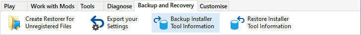
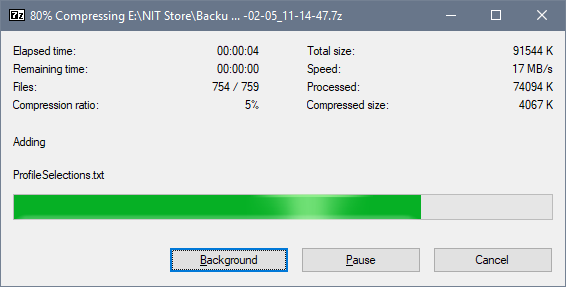
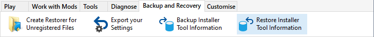
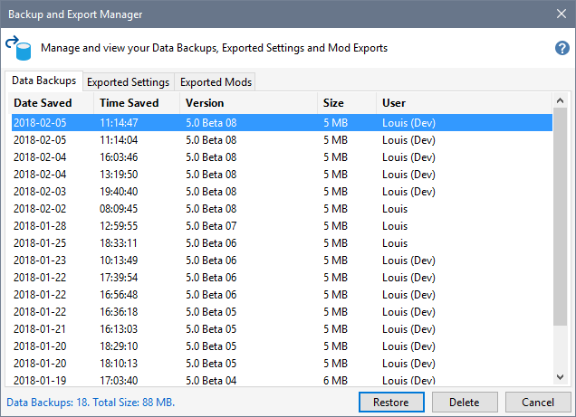
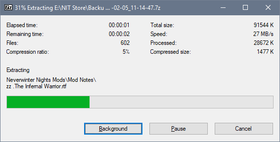

You should backup the Installer Tool's database files on a regular basis, but particularly after you have added or changed Mods. This provides you with a way to restore your information in the event of database corruption or when setting up a new PC.

Click Backup Data from the File menu to create a 7-Zip compressed file containing the Installer Tool's database files.




The Installer Tool is restarted after the extracting the contents of compressed backup file.
Backup and Restore the Installer Tool's data